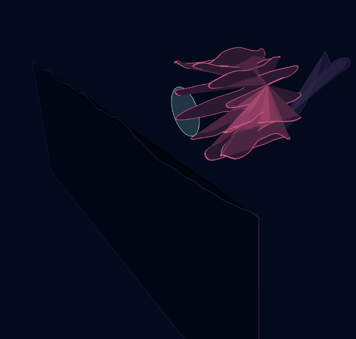
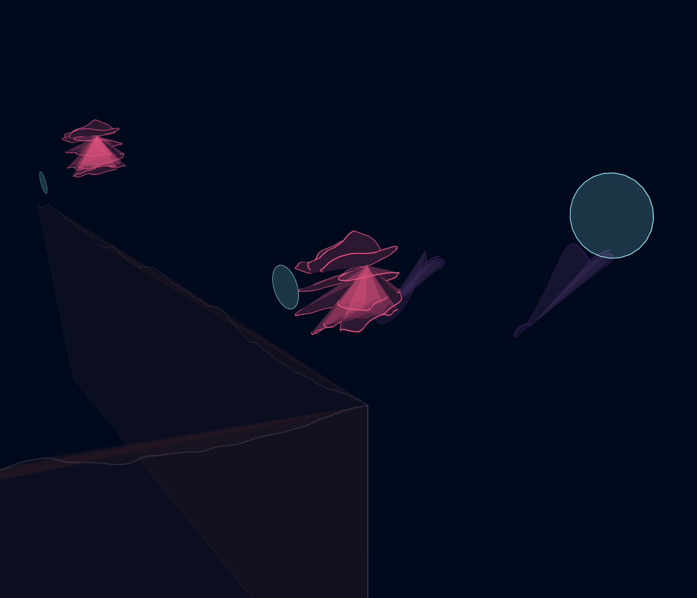
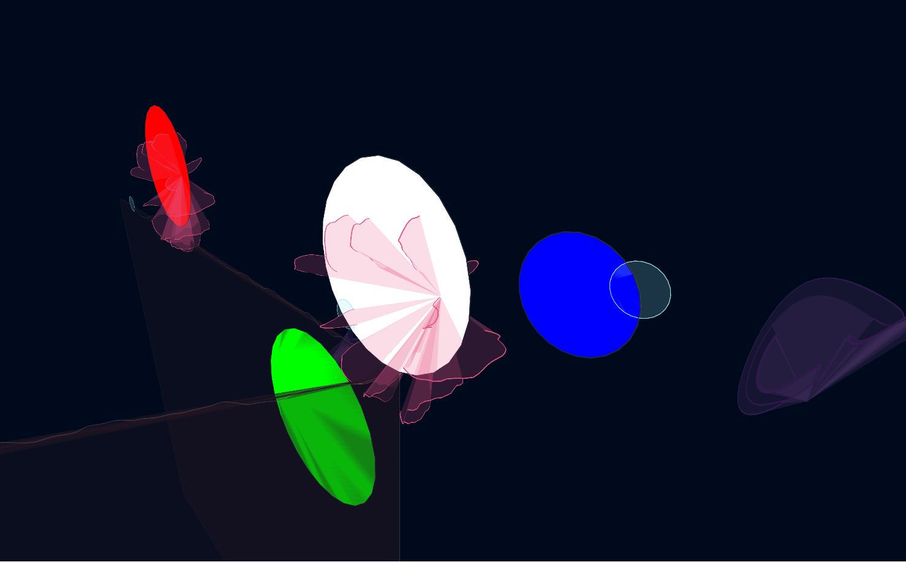
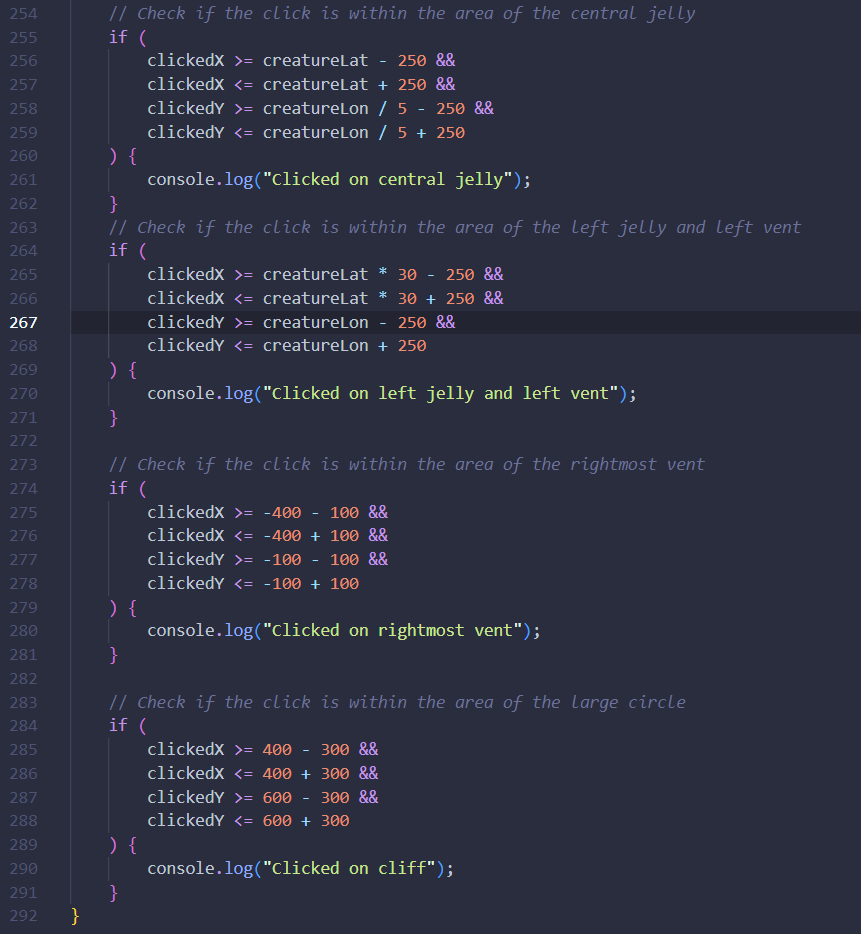
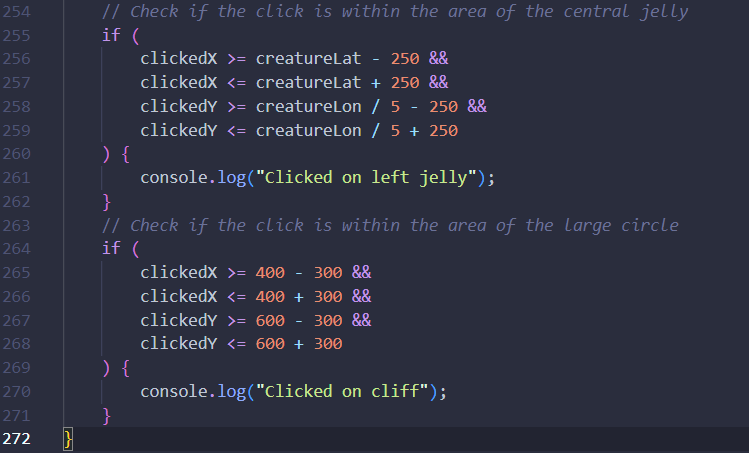

thoughts on development and my final evaluation
 To develop the piece further, I wrote some code that sends the location data scraped from the Ocean Networks Canada API to my JavaScript sketch (after being organised and cleaned, you can see this process in previous experiments). Then I wrote a function that holds this data in a few variables. I then use these variables to manipulate the location and movement patterns of the creatures. This means that over the weeks and months each one should locomotively respond differently. I considered the fact that I had spent a while creating ASCII codes of the names of each underwater location, but didn't choose to use the data. I thought about using it to control the size of the creatures, or the colours, but realised it had lost relevancy during the development of the work. To inject more life, I added colours, and more bodies that would inhabit the space. I also created cliff-like structures to show depth and symbolise the Mariana Trench - the deepest known point of our oceans. I created them based off a noise visualiser by Daniel Shiffman, continuing the theme of randomness and ambiguity in the piece.
In terms of interactivity, I attempted to create a mouse hover function. The goal was for the user to be able to hover their mouse over different creatures and get their current location and a randomised description and name of a real life deep sea organism. I wanted it to be random to reflect the fact that my visuals are not based on any singular biology. The circles you see drawn above were my attempt at understanding and mapping the coordinate system that I had altered so much in the process of fabrication. Since there were so many moving parts and so many different geometries, I was unable to write successful logic that would cause an action if the mouse hovered within a specific zone. For example:
None of these if statements had the expected behaviour of triggering the corresponding console log when clicking its respective circle.
These two did work in unexpected ways (where I clicked was not within the bounds I had specified, at least how I understood it) but I felt that with time constraints and only two locations, I should try a new method. This led me to the latin nomenclature of different deep sea organisms appearing and disappearing over the canvas, eventually stopping altogether. I think this is a more poetic way of communicating what the work is about. The mystification of the largest biome on our planet, the elusive nature of those that inhabit it, and the eventual collapse of such habitats if anthropogenic threats do not cease.
challenges, successes, what i would do next time
The biggest challenge for me was definitely the data itself. Finding an appropriate API to scrape from, and cleaning the data so it was usable took me a sizeable amount of time. I believe now that I've done it so much I could do it again but the technicalities of deciding what data is useful and how it should be used was a lot of pressure I did not expect to be under. The vastness of the topic and the amount of data was also overwhelming in and of itself. To ease this I chose an area of the API that felt feasible for me to handle but was still large enough to be classified as Big Data. I also think that working without much visual feedback was tiring, which could be that I am not accustomed to this field yet.
I still overall enjoyed every part of the process, it was tiring and puzzling which made it all the more rewarding. Some things that I feel went particularly well was my understanding of different chaotic systems advancing, and getting lots of opportunities to optimise my code. When working with so much information, it forces you to be efficient or things slow down or do not work at all. This is a skill this project forced me to be good at.
If I had more time I would have liked to try interactivity, not in the form of information coming up when you click or hover, but maybe implementing some form of colour-changing or bioluminescence from the creatures in response to your "presence". A 3D camera that actually moves through the space could have acted as a sort of rover that scientists often use to capture video and other forms of data. It could also have been interesting to simulate more minor aspects of the ecosystem. I had the hydrothermal vents but I could have also had marine snow - detritus from the surface waters that mostly consists of dead plankton and fecal pellets. This would have created more atmosphere. Furthermore, it could have been used as a jumping off point for more interrelations between each organism.
Overall I am satisfied with this project and what it communicates. The research and process was an enlightening one, but I hope I can continue to develop the work.